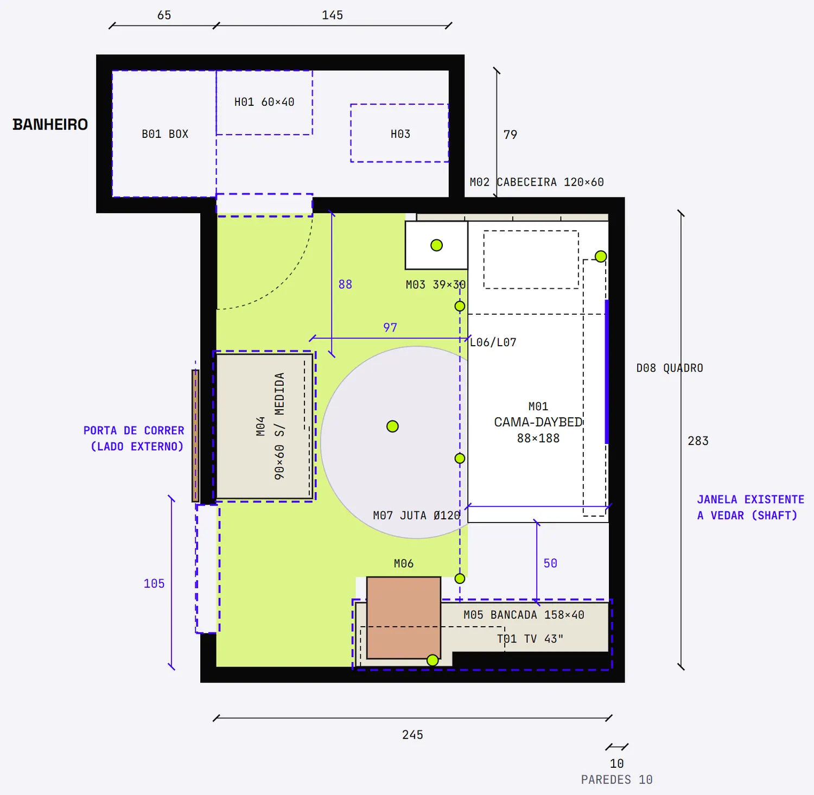
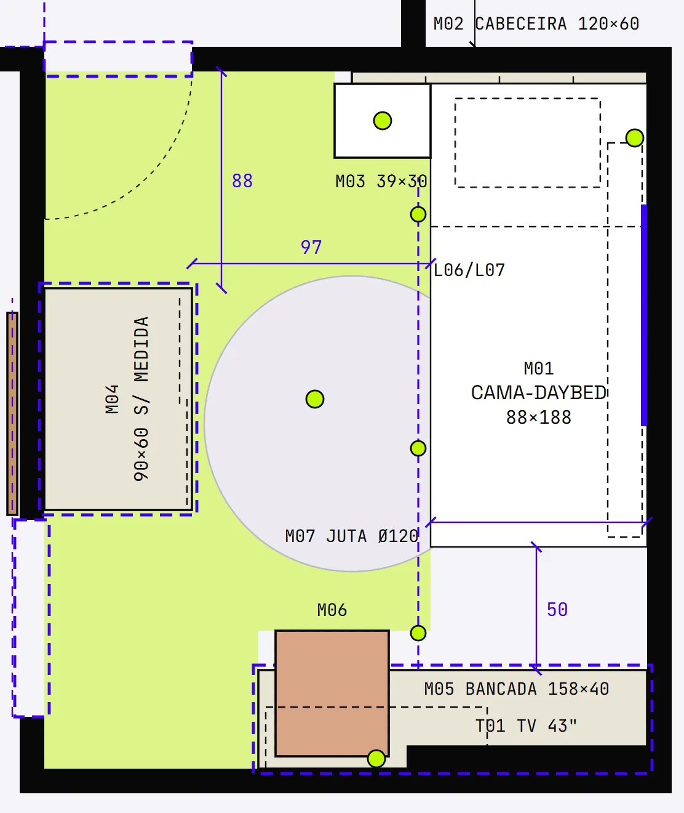
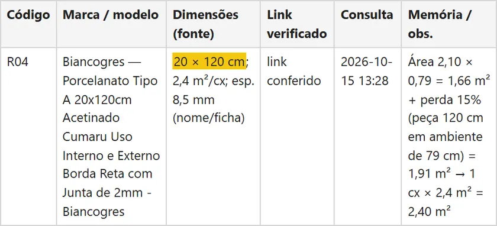
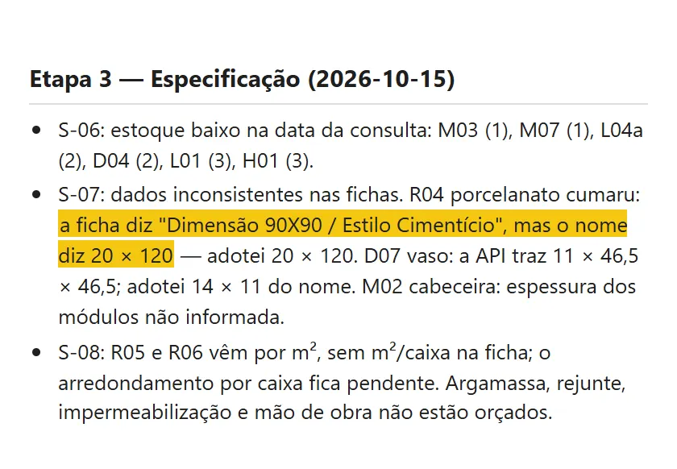

Passo 02 de 04 · Layout e especificação de produtos
Do conceito ao layout com produto real conferido ficha por ficha
Ele lê o levantamento e o seu conceito e devolve a planta de layout com a circulação medida, a especificação com link, preço e medida conferida contra a ficha, e a lista do que não bateu.
# PEDIDO Anexei essa planta, o levantamento e o conceito. Primeiro proponha o layout. Depois busque os produtos reais no site da loja (link no fim) para cada item do conceito. Abra a página de cada produto e confira a ficha técnica, ficha por ficha. Se a medida da ficha não bater com o nome do produto, não adote sem avisar: registre como pendência. Me devolva uma tabela com link, preço e a medida certa. # ANTES DE COMEÇAR Este comando precisa de busca na web e de abrir páginas (fetch ou navegador). Sem acesso à web, faça só a Parte 1 (layout), pare e avise: nenhum produto, preço ou medida sai de memória. Precisa também gravar arquivos. Se o seu chat não grava arquivos, entregue cada arquivo da SAÍDA inteiro, num bloco de texto com o nome dele na primeira linha. Ele continua o comando de levantamento. Use a mesma pasta de saída. # CONTEXTO Projeto de reforma de um cômodo residencial. Você atua como designer de interiores: o ambiente tem que ficar bonito e aconchegante, e cada escolha vem com justificativa. # ENTRADA - levantamento.md e planta_atual.svg: saída do comando de levantamento, já aprovada. - pendencias.md: o arquivo acumulado dos comandos anteriores. Leia o que existe, não apague e acrescente. - conceito.md: escrito por você, à mão, antes deste comando. Precisa conter: - uso do cômodo: [USO DO CÔMODO — ex.: sala de estar que também serve de escritório para duas pessoas]; - estilo e referências: [ESTILO E REFERÊNCIAS — ex.: escandinavo com madeira clara; 2 ou 3 imagens anexadas]; - orçamento-alvo: [ORÇAMENTO-ALVO — ex.: até R$ 20.000 em produtos, ou "sem teto"]; - o que fica e o que sai: [O QUE FICA E O QUE SAI — ex.: o sofá fica; a estante de alvenaria sai]; - exigências do morador: [EXIGÊNCIAS DO MORADOR — ex.: lugar para 40 livros; cantinho para a cama do cachorro]. Se faltar algum desses itens, pergunte antes de desenhar. Não complete o conceito por conta própria. Se o conceito contradiz o escopo aprovado no levantamento, pergunte qual vale antes de seguir. # PARTE 1 — LAYOUT Parar e pedir aprovação ao fim. 1. Proponha o layout a partir do conceito e das medidas do levantamento, com circulação mínima de 75 cm, e justifique as escolhas. 2. Confira a circulação com a cadeira e as portas em uso, não só com o móvel guardado. Se o conflito vem da posição do móvel, reveja o layout em vez de trocar a peça. 3. Planta de layout em SVG, na mesma escala da planta atual, com cotas dos móveis e afastamentos. 4. Nesta parte as medidas dos móveis são de projeto. Registre isso em pendencias.md como SUPOSIÇÃO a rechecar na Parte 3. 5. Pare e mostre: planta, tabela de circulação e o que precisa da minha decisão. # PARTE 2 — ESPECIFICAÇÃO DE PRODUTOS Só depois do layout aprovado. Para cada item (mobiliário, iluminação, revestimentos, metais e louças, cortinas, decoração): 1. Busque produto real à venda na loja indicada. 2. Abra a página do produto e confirme: link ativo, preço, dimensões L×P×A, material e cor. Nunca invente nem monte URL; link não confirmado não entra. 3. Confira o nome do produto contra a ficha técnica, campo por campo (medida, cor, material). Se divergem, registre em pendencias.md as duas versões, o valor adotado e o motivo. Nunca escolha uma delas em silêncio. 4. Dado que a ficha não traz entra como "não informado na ficha". Se precisar de um valor para seguir, marque SUPOSIÇÃO em pendencias.md. 5. Procure modelo 3D oficial do fabricante ou de biblioteca da marca. Sem modelo, a geometria fica PARAMÉTRICO PELA FICHA, registrada em pendencias.md numa única entrada G-, com a lista dos códigos dos itens sem modelo (não uma entrada por item). 6. Se nenhum produto da loja cabe no espaço, não force: o item vira marcenaria sob medida, SEM LINK — PENDENTE, com a medida do projeto e o motivo. 7. Se o que a loja vende obriga a mudar o conceito, registre a mudança: o que era, o que ficou e por quê. Se a ficha não aparece: - Muitas lojas carregam a ficha técnica por script, depois que a página abre. Um fetch simples pode trazer nome e preço e não trazer medida nem material. - Se você tem navegador ou execução de código, leia a ficha como a página a carrega e registre de onde veio o dado. O link da tabela continua sendo o da página do produto. - Se não consegue ler a ficha, o item fica com o campo vazio, marcado PENDENTE "ficha não acessível", e entra na lista do que eu preciso conferir. Não preencha pelo nome do produto sem dizer que veio do nome. # PARTE 3 — RECHECAGEM DO LAYOUT Troque na planta de layout as medidas de projeto pelas medidas reais dos produtos escolhidos, gere uma nova revisão e recheque todas as folgas. Folga que ficou abaixo de 75 cm vira pendência com a medida, para eu decidir. # REGRAS - Medidas em cm. Unidade em coluna própria. - O que não dá para extrair, verificar ou cotar entra marcado com o motivo, sem estimar. - Não busque em loja fora das permitidas. Item que falta na loja é registrado como falta. - Tudo o que foi suposição, não verificado ou aproximado vai para pendencias.md. O arquivo é acumulado: leia o que existe, não apague nem renumere e acrescente ao fim, com prefixo L- (layout), S- (especificação) ou G- (geometria) e situação ABERTA, SUPOSIÇÃO ou RESOLVIDA (com data e fonte). # SAÍDA Na mesma pasta de saída do levantamento: - conceito_layout.md: o conceito em uma página, a justificativa do layout e a tabela de circulação (código | trecho | medida | unidade | situação). - planta_layout.svg: planta de layout em escala, com cotas dos móveis e afastamentos; revisão nova depois da Parte 3. - especificacao.md: uma tabela por grupo, com código | item | marca/modelo | dimensões (fonte: ficha ou nome) | material/cor | preço unitário | quantidade | unidade | total | link verificado | data e hora da consulta | origem da geometria (MODELO DO FABRICANTE / PARAMÉTRICO PELA FICHA) | observação. No topo, a loja, a data e de onde saiu cada dado. Para revestimentos, uma tabela de quantitativos com área, perda % e memória de cálculo, unidade em coluna própria. - pendencias.md: o mesmo arquivo, com as entradas L-, S- e G- deste comando acrescentadas ao fim. A especificacao.md é a entrada do comando de orçamento. # CHECAGEM ANTES DE ENTREGAR - Todo link da tabela foi aberto nesta sessão e tem data e hora? - Todo item teve nome e ficha comparados? Cada divergência está em pendencias.md com o valor adotado? - Alguma medida, preço ou material saiu de memória ou de outro produto parecido? Se sim, apague e marque pendente. - A planta de layout final usa as medidas reais e todas as folgas foram medidas de novo? - O resumo da entrega cita algum número (itens, total em reais) que a tabela não mostra? Se sim, corte. # LOJA Site da loja ou mercado de referência para os produtos: [LOJA OU MERCADO — ex.: site da Loja Exemplo, só o endereço, sem parâmetros de rastreio] Lojas permitidas além dessa: [OUTRAS LOJAS — ex.: nenhuma]
O que ele resolve
Especificar reforma pequena é abrir aba de loja até cansar e copiar a medida do nome do produto. E o nome nem sempre bate com a ficha: no exemplo, o porcelanato do banheiro diz 20 × 120 no nome e 90X90 na ficha técnica. Se eu compro pela ficha, chega porcelanato errado na obra, né?
Esse prompt abre a página de cada produto, compara nome e ficha campo por campo e não escolhe uma versão em silêncio: as duas vão pra lista de pendências, com o valor adotado e o motivo. Link que ele não abriu não entra, e móvel que não cabe no nicho vira marcenaria SEM LINK — PENDENTE em vez de produto forçado. No fim, ele troca as medidas de projeto pelas dos produtos escolhidos e mede a circulação de novo, numa revisão nova da planta.
O que ele devolve








| Código | Verificação de circulação (mín. 75) | cm | Resultado |
|---|---|---|---|
| C1 | Frente do guarda-roupa ↔ cama (corredor) | 97 | OK |
| C2 | Chegada: parede inferior ↔ guarda-roupa (porta de correr, sem giro) | 105 | OK |
| C3 | Frente da porta do banheiro: guarda-roupa ↔ parede | 88 | OK |
| C4 | Canto do guarda-roupa ↔ canto do criado (passagem ao banheiro) | 78 | OK |
| C5 | Cadeira em uso ↔ guarda-roupa / cama | ≥ 80 | OK |
| C6 | Bancada ↔ pé da cama (área sem passagem) | 50 | NÃO É ROTA |
| TV | TV ↔ olho deitado (travesseiro) · desvio do eixo da cama | ≈ 245 · 5 | OK P/ 43" |
Role a tabela para o lado →
| Código | Item | Marca / modelo | Dimensões (fonte) | Preço unit. (R$) | Link verificado | Consulta |
|---|---|---|---|---|---|---|
| M01b | Colchão molas ensacadas solteiro | Umaflex — Colchão de Mola Solteiro Attractive 88x25x188cm - Umaflex | 88 × 188 × 25 cm (ficha/API) | 829,90 | link conferido | 2026-10-15 13:24 |
| M02 | Cabeceira modular estofada | Bella Arte — Cabeceira Modular de Linho Solteiro 4 Módulos 30x60cm Areia - Bella Arte | 4 módulos 30 × 60 cm (nome); espessura N/I | 269,90 | link conferido | 2026-10-15 13:24 |
| M03 | Mesa de cabeceira compacta 1 gaveta | Linea — Mesa de Cabeceira Búzios 30x65 cm com Gaveta Off White - Linea | 39 × 30 × 65 cm; pés palito 23 cm (API/ficha) | 358,90 | link conferido | 2026-10-15 15:52 |
| M04 | Guarda-roupa 2 portas de correr — MARCENARIA SOB MEDIDA Pendência | sem produto na Loja A que caiba no nicho de 90 cm | 90 × 60 × 240 cm (projeto) | — | SEM LINK — PENDENTE | 2026-10-15 |
| P01 | Kit porta de correr de madeira 80 × 210 (porta de acesso) | Madelar — Kit Porta de Madeira de Correr 80x210cm Curupixa - Madelar | Vão 80 × 210 cm; batente indicado 12 a 14 cm (ficha) | 1.199,90 | link conferido (estoque: 2) | 2026-10-15 15:52 |
| L01 | Pendente de sisal | Vesper — Pendente Sisal 01 Lâmpada E27 Palha PS11 - Vesper | Ø 22 × 29 cm (API) | 265,90 | link conferido (estoque: 3) | 2026-10-15 13:27 |
| R04 | Porcelanato piso — banheiro | Biancogres — Porcelanato Tipo A 20x120cm Acetinado Cumaru Uso Interno e Externo Borda Reta com Junta de 2mm - Biancogres | 20 × 120 cm; 2,4 m²/cx; esp. 8,5 mm (nome/ficha) | 119,90 /m² | link conferido | 2026-10-15 13:28 |
| H01 | Gabinete suspenso ripado com cuba de apoio | Astral Design — Gabinete Ripado com Cuba 60x40cm Freijó - Astral Design | 60 × 40 × 47 cm; cuba 40 × 34 × 12 (ficha) | 2.662,30 | link conferido (estoque: 3) | 2026-10-15 13:29 |
Saída de exemplo · Planta de layout, especificação e pendências · Dados reais anonimizados
Macete(ando o apocalipse)
- Esse processo tende a ser mais preciso depois que você configurar as skills e agentes. Te explico como fazer essas coisas na nossa newsletter, o Campo Minado. Só clicar aqui.
- O engenheiro da nova geração é, acima de tudo, responsável. Lembre-se que IA pode cometer erros. Use ela como um facilitador, não como verdade definitiva. O prompt organiza e explicita o cálculo — quem responde pelo número continua sendo você.
- Preço e estoque valem na hora da consulta, que vai na coluna ao lado do link. No exemplo, seis itens já estavam com estoque baixo no dia (S-06). Passou uma semana? Abre o link de novo antes de fechar a compra.
- Cada medida diz entre parênteses de onde veio: (ficha), (API) da página, (nome) do produto, (projeto) ou a combinação, como (nome/ficha) e (ficha/API). A que traz só (nome) ou (projeto) não foi lida em ficha nenhuma. É a primeira que você confere com o fabricante antes de encostar marcenaria nela.
- Revestimento sai com área, perda e memória de cálculo, mas a perda é critério dele: no exemplo, 15% pela peça de 120 cm num banheiro de 79 cm. O que a loja vende por m² sem informar m² por caixa fica com o arredondamento pendente, e argamassa, rejunte, impermeabilização e mão de obra não entram na especificação (S-08). Confere a paginação antes de contar caixa.
- No exemplo foram 46 itens: 44 com link e 2 SEM LINK — PENDENTE, o guarda-roupa e a bancada, que viraram marcenaria porque nada da loja cabia. Esses dois seguem pro orçamento sem produto e sem preço. Chama o marceneiro com a medida do projeto, não com a do catálogo.
- A circulação de 75 cm é conferida com cadeira e portas em uso, mas em cima das medidas do levantamento: se lá tinha SUPOSIÇÃO, a folga herda. E porta de correr pelo lado de fora precisa de parede livre no corredor, coisa que a planta não enxerga. O desenho não vê o interruptor. Você vê, vai lá e olha.
Cada passo consome a saída do anterior
Esse é só um dos prompts que uso no meu dia a dia pra ganhar mais tempo livre.
Posto isso e muito mais no Instagram.